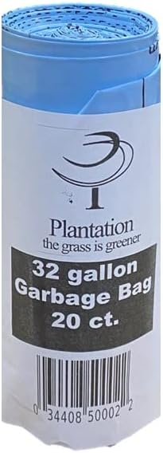
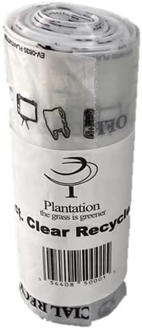

Plantation · City Services · Quick Reference
City of Plantation, FL: the quick reference every resident needs
Two years ago a summer storm flooded my backyard in under twenty minutes. Last spring, a neighbor's oak took out part of our fence. Both times I had the same problem: no idea who to call. This page is what I wish I'd had both times.
Plantation has its own water department, its own solid waste rules, its own permit system, and about sixteen departments spread across a dozen buildings. The city website has all of it — somewhere. Finding it in a moment of need is a different problem.
The flash flood taught me that street drainage and yard drainage are handled by two different departments. The neighbor's tree taught me that tree ownership, debris removal, and swale maintenance each have their own contact. Both lessons cost me time I didn't have.
Everything below is sourced directly from plantation.org and organized by the situations that actually come up. Keep this page bookmarked.
Numbers to save right now
Before you need them is a much better time to save these than during a storm or at 2am when a pipe bursts.
Plantation — Essential Numbers
- 911 — Life-threatening emergency
- 954-797-2100 — Police, non-emergency · 451 NW 70th Terrace
- 954-797-2150 — Fire Department · 550 NW 65th Ave
- 954-797-2200 — City Hall (general) · 400 NW 73rd Ave
- 954-797-2290 — Utilities / Water billing · M–F 8am–4pm
- 954-452-2544 — Utilities after hours (sewer backup, water main, meter leak)
- 954-452-2535 — Public Works · 750 NW 91st Ave · M–F 7am–4:30pm
- 954-974-7500 — Waste Management (trash & recycling questions)
Who to contact for what
The fastest path is almost always email. It routes to the right department, creates a paper trail, and gets a faster response than calling the general line and being transferred twice.
| Situation | Contact |
|---|---|
| Code violation — messy yard, bulk trash left out early, unsanitary pool | askcode@psd.plantation.org Code Enforcement is under the police dept. |
| Tree in the swale needs trimming | Public Works: 954-452-2535 Private streets may fall to your HOA instead. |
| Neighbor's tree came down — debris in the swale | Askpublicworks@plantation.org Tree ownership questions: Engineering 954-797-2282 |
| Street flooding / drainage after a storm | Engineering: Engineeringdept@plantation.org · 954-797-2282 |
| Building permits & home improvement questions | HelpMeBuilding@Plantation.org Track permit status: aca.plantation.org |
| Neighbor building without permits | BuildingEnforcement@plantation.org |
| Tree removal permit (required by city code) | LandscapeInfo@Plantation.org Replacement tree also required |
| Water bill unusually high | utilitybilling@plantation.org Set up EyeOnWater app to catch leaks early |
| Speeders in your neighborhood | Long-term fix: Engineering 954-797-2282 Immediate enforcement: traffic sergeant 954-797-2154 |
| "Zoning" sign on a nearby property | HelpMeZoning@Plantation.org · 954-797-2225 Means a modification application is under review |
| Dangerous sidewalk crack | Askpublicworks@plantation.org |
Trash, bulk pickup & recycling
Regular trash — the blue bag system
Plantation is the only city in Broward County that uses a Pay As You Throw (PAYT) program, and it's been in place for over 40 years. The concept is simple: instead of a flat monthly fee, you pay per bag. The cost of the bags — plus your monthly utility bill — covers garbage collection, bulk pickup, and recycling combined.
Collection runs twice a week. No service on Sundays or Christmas. Bags must be curbside before 7am on your collection day. Maximum 40 lbs per bag. You can also use the smaller kitchen-size bags for lighter loads, available at a lower price at the same stores.
Both the blue trash bags and the clear recycling bags are sold at most Publix locations in Plantation, Winn-Dixie, Walmart, and Food Fair (7139 W Broward). You can also order on Amazon if you'd rather not make a special trip — just don't let yourself run out mid-week.

Plantation Blue Trash Bags
Official 32-gallon blue bags for regular household trash. The only bags the city will collect — black bags stay at the curb.
Order on Amazon
Plantation Clear Recycling Bags
Official clear bags for weekly single-stream recycling. Keep a separate stock from your blue trash bags.
Order on AmazonLost your bag ties? Free replacements at Public Works, 750 NW 91st Ave. Three areas use roll-out carts instead of bags — Hawks Landing, Melaleuca Isles, and Plantation Acres. Call Waste Management at 954-974-7500 with cart questions.
Bulk pickup — 2026 schedule
Your zone depends on which side of University Drive you live on. Place items curbside no earlier than the Saturday before your scheduled week, and no later than 7am on collection day. The maximum is 15 cubic yards per pickup — roughly the size of a compact car.
| Zone | 2026 Pickup Weeks |
|---|---|
| East of University Drive | Jan 5–10 · Feb 2–7 · Mar 2–7 · Apr 6–11 · May 4–9 · Jun 1–6 · Jul 6–11 · Aug 3–8 · Sep 7–12 · Oct 5–10 · Nov 2–7 · Dec 7–12 |
| West of University Drive | Jan 12–17 · Feb 9–14 · Mar 9–14 · Apr 13–18 · May 11–16 · Jun 8–13 · Jul 13–18 · Aug 10–15 · Sep 14–19 · Oct 12–17 · Nov 9–14 · Dec 14–19 |
Not sure which zone? Check the interactive map at pgis.plantation.org/wasteapp.
Accepted: appliances, furniture, mattresses, carpet, yard waste, water heaters, toilets, sinks. Not accepted: construction debris, drywall, concrete, tires, paint, chemicals, electronics, or bags of any kind. Freon appliances (AC units, refrigerators) need the refrigerant removed and a sticker before placing curbside — call Waste Management to arrange.
Recycling
Single-stream recycling — everything goes in one clear bag. Rinse containers and remove caps before putting them in. Acceptable materials include glass bottles and jars, food cans, plastics #1–5 and #7 (not #6 polystyrene/styrofoam), paper, and flattened cardboard cut to no larger than 18"×24". Paper cups and plastic cups are also accepted. Recycling is picked up weekly.
Hazardous waste & electronics drop-off
Win-Waste Innovations · 4400 S. State Rd 7, Davie · 954-581-6606. Monthly Saturday events — 2026 remaining dates: Jun 13, Jul 18, Aug 15, Sep 12, Oct 17, Nov 21, Dec 19. Plantation residency required. Electronics do not go in the regular trash or at the curb.
Water & utilities
Plantation runs its own water and wastewater utility — this is not a county service. Billing questions: 954-797-2290 · utilitybilling@plantation.org · M–F 8am–4pm. Daytime emergencies: 954-513-3462. After-hours emergencies (sewer backup, water main break, meter leak): 954-452-2544.
One thing worth doing before you need it: set up the EyeOnWater app. It connects to your city meter and lets you monitor daily usage with leak alerts. Take five minutes to configure an alert threshold and you won't have to think about it again — until it saves you from a four-hundred dollar bill caused by a running toilet you didn't notice.
Permits — more things require them than you think
In Plantation, permits are required for more projects than most homeowners expect: pools, re-roofing, water heater replacements, AC unit replacements, kitchen cabinet upgrades, many HVAC modifications, and any structural changes. The safest move before starting any home improvement project is to email HelpMeBuilding@Plantation.org first and ask. Correcting unpermitted work is significantly more expensive than permitting it upfront.
Tree removal also requires a permit in Plantation — and a replacement tree. Contact LandscapeInfo@Plantation.org before cutting anything. You can track permit application status online at aca.plantation.org.
Parks & recreation
Plantation has 42 parks, an aquatic complex, tennis and pickleball at Veltri Racquet Center, an equestrian center, and Plantation Preserve Golf Course & Club. Program registration is at plantation.org · 954-452-2510 · Parks@plantation.org.
Leashed dogs are welcome in designated passive parks. The Parks page has a dog-friendly map if you want to find spots before heading out.
Library
Helen B. Hoffman Plantation Library
- 501 N. Fig Tree Lane, Plantation, FL 33317
- Main: 954-797-2140 · Reference: 954-797-2144 · Children's: 954-797-2145
- Mon–Thu 10am–8pm · Fri–Sat 10am–5pm · Closed Sunday
Emergency alerts
The city uses Everbridge for emergency notifications — storms, boil-water orders, major outages. Sign up at plantation.org/everbridge. Takes about two minutes and you'll only notice it when something is actually happening. Worth doing once and forgetting about.
Official City of Plantation references
Everything in this article is sourced directly from plantation.org. If you want to dig into any of these topics or download forms: